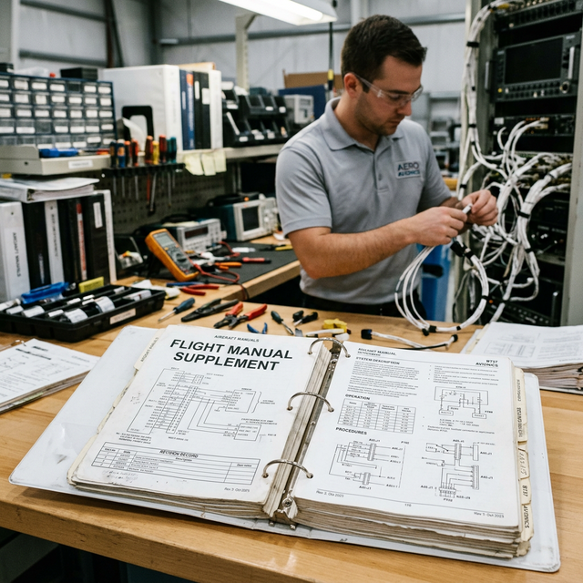

Major alteration basics
Module Objectives
- Define a "Major Alteration" according to 14 CFR Part 43 Appendix A.
- Recognize the correlation between an STC Flight Manual Supplement and a major alteration.
- Identify the specific FAA form required to document a major alteration.
Why Does This Matter?

Your shop installs a new modern glass touchscreen GPS navigator under a Supplemental Type Certificate (STC). The STC package includes a thick Flight Manual Supplement that changes the aircraft's approved operating limitations from VFR-only to IFR-approved. Is this a minor alteration or a major alteration? Getting this classification wrong is a severe regulatory violation, because a "Major Alteration" instantly triggers the requirement for specialized FAA paperwork (Form 337) and an Inspection Authorization (IA) sign-off.
What You Need To Know
What Is a Major Alteration?
Per 14 CFR Part 43, Appendix A, a major alteration is defined as:
> A change to the type design that might appreciably affect structural strength, performance, powerplant operation, flight characteristics, or other qualities affecting airworthiness — and is not listed in the aircraft specifications or type certificate data sheet.
The critical phrase here is "might appreciably affect." The alteration does not have to definitely, negatively impact the aircraft; the mere potential to alter the baseline airworthiness qualities is sufficient to classify it as major.
What Makes It "Major" — Not Minor?
The classification is based strictly on the effect on airworthiness, not on:
- The financial cost of the avionics package.
- The labor hours required for the installation.
- The physical size or weight of the component.
- The fact that the equipment holds a TSO (Technical Standard Order).
A relatively simple avionics harness integration can be a major alteration if it heavily integrates with the autopilot or changes the aircraft's operating limitations. Conversely, swapping a large, heavy passenger seat for an identical approved part number is minor maintenance.
The Ultimate Tell: Flight Manual Supplements
A common example in avionics: an STC installation that requires adding a Flight Manual Supplement to the pilot's handbook is virtually always a major alteration.
- The flight manual supplement exists because the modification fundamentally changes the aircraft's approved operating procedures, capabilities, or limitations.
- Any change to limitations directly meets the "appreciably affect airworthiness qualities" threshold.
*Note: The fact that the installed part has a TSO approval does not change the classification. A TSO certifies the 'box' meets a standard. It does NOT certify the installation into an airframe.*
The Documentation Burden
Minor alterations are documented with standard logbook entries (§43.9). Major alterations require significant regulatory overhead:
- 1. FAA Form 337 (Major Repair and Alteration) — Filed with the FAA and kept in the aircraft records.
- 2. Approved Data — Must be performed using data explicitly approved by the FAA (like an STC or Field Approval), not just acceptable data.
- 3. IA Signature — Must be approved for return to service by a mechanic holding an Inspection Authorization (IA), or an authorized Part 145 repair station.
System Visualization
graph TD
A[Proposed Avionics Installation] --> B{Does it alter the Type Design?}
B -- Yes --> C{Might it appreciably affect flight characteristics or limitations?}
C -- Yes --> D[Classified as MAJOR ALTERATION]
D --> E[Requires FAA Approved Data STC]
E --> F[Requires FAA Form 337]
F --> G[Requires IA / Repair Station Approval]
C -- No --> H[Classified as MINOR ALTERATION]
H --> I[Requires Acceptable Data]
I --> J[Requires Standard Logbook Entry 43.9]
style D fill:#991b1b,stroke:#7f1d1d,stroke-width:2px,color:#fff
style H fill:#1e40af,stroke:#1e3a8a,stroke-width:2px,color:#fff
On The Job
When you are assigned an installation project, ask the lead: "Is this a major or minor alteration?" If the STC installation manual includes a Flight Manual Supplement, you are certainly working on a major alteration, and FAA Form 337 will be required. Understand this classification before you start wiring so you can ensure you are precisely following the approved STC data.
Reference Terms
Major Alteration (Part 43 Appendix A)
A change to type design that might appreciably affect structural strength, flight characteristics, or other airworthiness qualities — and is not listed in the aircraft specifications or type certificate data sheet.
STC + Flight Manual Supplement = Major Alteration
An STC installation that includes a flight manual supplement is a major alteration — regardless of the part's TSO status — because it changes the aircraft's approved operating limitations or procedures.
Major Alteration
A type design change that might appreciably affect airworthiness qualities, requiring approved data and Form 337.
FAA Form 337
The official, mandatory documentation form used to record major repairs and major alterations.
Flight Manual Supplement
An addition to the pilot's operating handbook detailing new procedures or limitations resulting from an installed modification (STC).
Assessment Check
A major alteration is any change that might appreciably affect airworthiness — an STC requiring a flight manual supplement is a flashing neon sign that you are executing a major alteration. --- ---